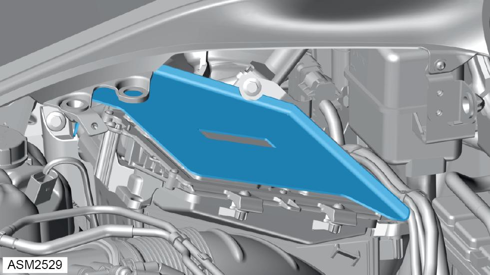
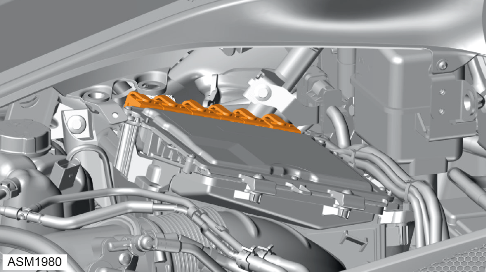
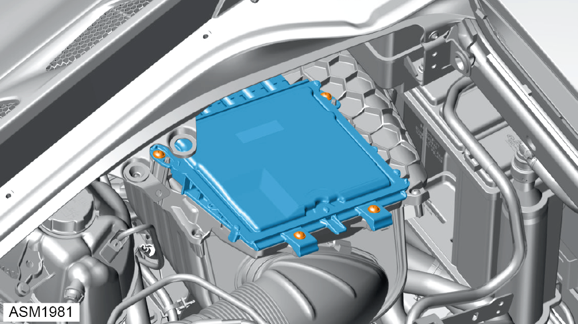

Electronic Control Module (ECM) - 4 Cylinder
Print
Operation Code: 17.06.13-02
Removal
- Disconnect battery. Refer to procedure.
- Remove engine cover. Refer to procedure.

- Remove splash shield secured to Electronic Control Module (ECM).
NOTE: The splash shield is retained using
adhesive strips.

- Disconnect harness connectors (x6) from ECM.

- Remove 6x20 screws (x4) securing ECM to airbox assembly. Torque 6 Nm.
- Remove ECM.
Installation
- Installation is the reverse of removal procedure.
- Clean off excess adhesive from splash shield and ECM, renew double sided foam adhesive tape.
- After installation download software using Emira DS.
- Perform a diagnostic read and clear error memory using Lotus Insight tool.